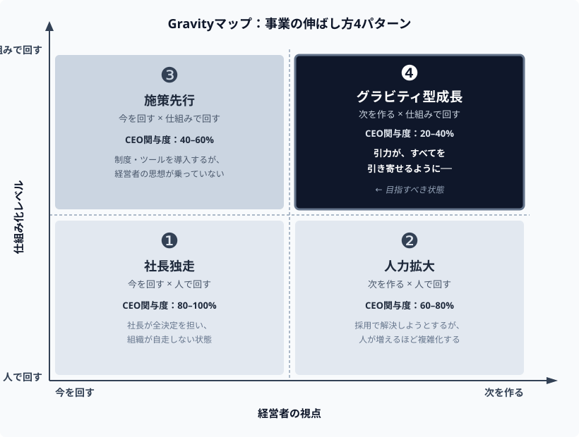

① 特定の機能の利用頻度低下
② キーマンの異動
③ サポートへの問い合わせ内容の変化
引力の参謀 ── 50 事業診断から辿り着いた、1 つの構造
すべてを、引き寄せる。
50 社診断から辿り着いた、
個人引力を組織に翻訳する 25 ページ。
採用と離脱の現場で、何が起きているか。
── これは「採用」の問題ではない。経営者本人の引力の問題だ。
これは、あなたの努力不足ではない。アプローチの方向が、間違っているのだ。
仕事ができる経営者ほど、自分で判断し切れてしまう。権限を委譲したはずの領域も、最後は自分で決めている。幹部は育たず、右腕は裁量を得られずに離れていく。組織はあなたに依存し続ける。その"優秀さ"が、事業の天井を作っている。
だから、この WhitePaper の主張は一つだ。
経営者が本来の自分を取り戻した時、組織は引力を持ち始める。人も、判断も、勝ち筋も、顧客までが自然と社長のもとに集まり始める。社長がいなくても、すべてが回る ── これが、引力経営だ。本 WP は、その原理と実装法を 25 ページで示す処方箋である。
Gravity マップ
事業の伸び方には、たった 4 つのパターンしかない。50 社以上の経営者を診断して辿り着いた構造だ。

図1：Gravity マップ
縦軸は「人で回す／仕組みで回す」、横軸は「今のステージ／次のステージ」。この 2 軸で事業は 4 つに分かれる。
象限ごとの、抜け道。
毎週の 1on1。月次エンゲージメントサーベイ。外部コンサルと作った評価制度。経営合宿でのミッション再定義。──世間で「正しい」と言われる組織施策は、一通り試した。
制度を増やすほど、それを回す会議が増える。評価を公平にするほど、調整コストが膨れる。納得感を重視するほど、意思決定は遅くなる。結果、あなたの時間は「事業を伸ばす仕事」から「組織の調整と説得」に奪われていく。
そして、さらに残酷な事実がある。
あなたは❹だと思っている。でも、実際は❷だ。図1を、もう一度見てほしい。あなたがいる象限は、本当に❹だろうか。
出典：GrowthFix による経営者診断（DMM.com／MOON-X 在籍時の関与事業含む）50 社以上・2010–2026 年。「自社の Gravity 象限の自己認知」と「診断後の判定」の突合による。
会社が一定の規模になると、経営者は「そろそろ"立派な組織"にしなければ」という強迫観念に駆られる。スタートアップの熱気を否定し、整然とした組織図を描き、"立派な経営者"として振る舞おうとする。
投資家を安心させるため。採用市場で見栄えを良くするため。あるいは、自分が"立派な経営者"になったと実感するため。
その過程で、経営者は自分の直感や偏愛、時に理不尽とも思える"こだわり"を押し殺す。本音を語らず、借り物の論理で判断し始める。──これが "演じる" ということだ。
「社長は最近、丸くなった」「制度は整ったが、昔のような熱気がない」「言っていることは正しいが、心に響かない」──彼らは口には出さない。でも、全員が感じている。
演じる経営者の言葉には、熱が乗らない。熱の乗らない言葉に、人は惹きつけられない。判断もブレるため、組織の仕組みに翻訳できない。
個人引力から、組織引力へ
声を張り上げなければ動かない組織。それは、引力ではなく「張力」だ。力ずくで引っ張り続けなければ、止まる。社長が休めば、会社も休む。
一方で、経営者の周囲に、人・判断・エネルギー・顧客が自然と集まる組織がある。これが「引力（Gravity）」だ。そこにあるだけで、周囲を巻き込み、自己増殖する力。
経営者自身が発している個人引力と、組織全体が発している組織引力。後者は、前者を翻訳した結果として立ち上がる。まず、個人引力から見ていく。
50 事業で見てきた経験則がある。経営者の個人引力は、Why × 才能 × 偏愛の 3 要素で必ず記述できる。
| 要素 | 定義 |
|---|---|
| Why | 何をするときに自分が燃えるか／なぜそれをやるのか。富や評価を取り除いて残る、根源動機。 |
| 才能 | 頼まれなくても自然にできてしまう動きと、それが発火する環境・関係・時間。あなたの本能的な動き方とその発露条件。 |
| 偏愛 | 譲れない好みと、絶対に選ばない嫌い。社会の期待ではなく、あなた自身が判断軸として持っている価値観。 |
3 要素がどれだけ噛み合っているか ── この整合度で、個人引力は 4 型のどれかに必ず分類される。型によって、次に打つべき手が変わる。
| 型 | 状態 | 次の一手 |
|---|---|---|
| ① 整合型 | Why × 才能 × 偏愛がすべて整合 | 組織への翻訳（Scan） |
| ② Why ズレ型 | Why が借り物になっている／社会的期待に塗り替えられている | 個人軸の整え（Coaching） |
| ③ 才能ズレ型 | 自然な動きで動けていない／才能が発火する環境にいない | 個人軸の整え（Coaching） |
| ④ 偏愛ズレ型 | 譲れない好みではなく、社会の期待で判断軸が形成されている | 個人軸の整え（Coaching） |
個人引力が明確になったら、次は組織に翻訳する。組織引力は、4 段階で発生する。経営者が本来の自分を取り戻した時、判断が一貫し、人に渡せる型に翻訳され、仕組みとして機能する ── この階段を上ったとき、組織に引力が生まれる。
Gravity CODE ／ 3 要素 × 4 型の判定
前章で示した個人引力の 3 要素（Why × 才能 × 偏愛）× 4 型は、一人で自己診断できるものではない。自分の言葉で自分の引力を客観視するのは、自分の声で自分の録音を聞くのと似ている ── 内側と外側で、響きが違う。
Gravity CODE は、この 3 要素と 4 型を60 分の対話で判定する、個人引力の解剖セッションだ。石井が第三者の耳で、あなたの言葉から 3 要素を抽出し、どの型に当てはまるかを判定する。
CODE は 5 万円・60 分・Zoom のセッション。個人引力という最上流のレイヤーを定義しておくことで、Scan や Coaching 以降のすべての工程が変わる。型を知らずに組織翻訳へ進むと、翻訳の原本が揺らいでしまう。
Gravity Scan ／ 個人引力を、採用 4 軸に翻訳する 60 分
経営者の頭の中では、事業の勝ち筋も、人を動かす基準も、完璧に整理されている。だが、それは経営者の言葉で書かれている ── あなた自身の直感、偏愛、判断の癖。言語化すらされていない、独自の体系だ。
一方、優秀人材が集まり躍動する組織が動くのは別の言語だ。採用基準・面接プロセス・採用後評価軸・幹部役割分担 ── 候補者にも幹部にも同じ意味で受け取れる、公的な言語体系。
引力が採用と組織に届かないのは、あなたの言語化が不足しているからではない。翻訳が、不在だからだ。
| あなたの言葉（個人引力） | 採用と組織の言葉（翻訳後） |
|---|---|
| Why（根源動機） | 採用基準 ／ 採用後評価軸 |
| 才能（自然な動きと発火環境） | 面接プロセス ／ 幹部役割分担 |
| 偏愛（譲れない好みと嫌い） | 採用判断軸 ／ 組織カルチャー |
Scan は、この翻訳作業を 60 分の対話で共同制作する。主成果物は面接ブループリント 5 要素（採用基準／口説きフレーズ／辞退理由ブロック／入社後 3 ヶ月評価／幹部同席設計）── 来週の面接でそのまま使える具体性で持ち帰る。構造は 3 パート。
自分の言語を、自分で客観視することは難しい。経営者の言葉も、採用と組織の言葉も、両方を内側から知る第三者の翻訳者がいて初めて、引力は採用と組織の言葉になる。
── それが、Scan 60 分の中身だ。
Gravity Shift ／ 勝ち筋ループが回り始める 3 ヶ月
Scan で描いた設計図は、そのままでは組織を動かさない。設計図は地図にすぎず、実際に歩いて道を作るフェーズがいる。Gravity Shift は、設計図を3 ヶ月で組織の仕組みに実装する伴走だ。
Scan の設計図が、現在の組織で実装可能か。最初の 2 週で CEO と幹部 2 名の認識を突き合わせ、3 つのパターンに仕分ける。
| パターン | 状態 | Week 3-12 の優先 |
|---|---|---|
| 整合 | 設計図と現組織が揃っている | 仕組みの標準化と委譲加速 |
| ズレ | 設計図と現運用に差がある | 評価軸・会議体の修正 |
| 漏れ | 設計図が現組織で落ちている | 役割分担・制度の新設 |
残り 10 週で、診断で仕分けた領域を順に仕組み化する。週次の実装ミーティング＋月次レビューで、設計図どおりに組織が動き始めるところまで付き添う。CEO が判断を手放せるようになった領域から、組織引力が立ち上がる。
Gravity Shift：3 ヶ月 ／ 80 万円（幹部 2 名枠込み）／ Week 1-2 診断 ＋ Week 3-12 実装伴走
Gravity Orbit ／ 幹部複数人への引力複製
Shift の 3 ヶ月で、組織の 仕組み は出来る。だが、その仕組みを動かすのは 人 だ。Shift 単独では、幹部が「自分の言葉」で判断を下せるところまでは届かない。
"幹部が自律的に動く組織" を実装するには、最低 6-12 ヶ月の 継続的な引力複製 が必要だ。経営者一人に集中していた引力を、幹部複数人に少しずつ渡していく。これが Orbit の仕事である。
Gravity Orbit は、社長一人の引力を、幹部複数人の引力に複製する 月次伴走だ。経営者のメンテナンスに加え、幹部ひとりずつに「あなた自身の引力源泉」を言語化するセッションを実施する。
Gravity Orbit：Standard 月 15 万円（幹部 1 名）／ Pro 月 25 万円（幹部 3 名 ＋ 月 1 本の戦略納品）／ 1 ヶ月更新契約
Case A ／ SaaS・従業員 40 名
── CODE → Scan → Shift の 3 段階を通過した事例。
A 社の社長は、カスタマーサクセスの解約リスク判定に、毎週 15 時間を奪われていた。全顧客の状況を把握し、解約の兆候を直感で察知し、対策を指示する ── 彼にしかできない仕事に見えた。
まず CODE で、社長の個人引力を 3 要素 × 4 型に分解した。Why は「選んでくれた顧客を絶対に失いたくない」、才能は「見抜く ／ 察知する ／ 先回りする（10 名以下の小規模集中で発火）」、偏愛は「顧客一人ひとりの兆候を見逃さないこと」。判定は 整合型 ── Why × 才能 × 偏愛の 3 要素が揃っている状態。次の一手は、採用と組織への翻訳（Scan）と明示された。
続いて Scan で、「この顧客は危ない」と感じる基準を翻訳マップに落とし込んだ。深掘りすると、3 つの明確なサインが浮かび上がった。
① 特定の機能の利用頻度低下
② キーマンの異動
③ サポートへの問い合わせ内容の変化
この 3 サインを、面接ブループリント 5 要素としてCS マネージャー採用基準・面接プロセス・採用後評価軸・幹部役割分担に翻訳した。採用ペイン診断で明らかになったのは「社長が毎週個別判断している領域」── ここを組織に渡せる形にすることが、Shift フェーズの最優先となった。
Shift の Week 1-2 で、A 社の組織は 「漏れ」パターンと診断された ── 設計図は描けているが、現組織にそれを動かす仕組みが無い状態。Week 3-12 で、3 サインを CS チームの週次会議アジェンダと評価軸に組み込み、判定権限をマネージャーに委譲した。
社長の CS 会議時間は、週 2 時間に激減した。
空いた 13 時間で、社長は止まっていた新規事業のロードマップを描き直し始めた。社長が変わったのではない。演じるのをやめて、個人引力を組織の言葉に翻訳しただけ。組織は社長の顔色ではなく、翻訳された判断基準を見て動き始めた。── これが、引力経営のスタート地点だ。
組織に、引力を。
私が生まれ育った和歌山市は、県庁所在地で唯一、45 年連続で人口が流出し続けた街だ。物心ついた頃から、街から人の求心力が失われていく景色を見て育った。
一方、今住んでいる千葉県流山市は、6 年連続で人口流入数が全国 1 位。「母になるなら、流山市」というキャッチコピーで、若い世代が集まり続けている。
同じ日本で、同じ時代に、引力がある街と、引力がない街がある。人は引力のある場所に集まり、ない場所から離れていく。これは観察可能な現象だ。
街の引力がその街の中心にいる人たちから生まれるように、組織の引力は経営者自身の "本来" から生まれる。気づけば私は 30 年以上、組織の引力 ── 人が集まり、活きる力を追いかけてきた人間だった。小学生で児童会長、中学で生徒会長、大学は中心市街地活性化のゼミ。就職してからは組織人事一筋。
DMM で 50 事業の HRBP 統括、MOON-X で 30 → 120 名の組織設計を経て、2024 年独立。これら 16 年は、組織の引力を職業として設計した期間だ。採用基準を作り、面接プロセスを設計し、評価軸を整え、幹部役割を分担する ── すべて「人が集まり、人が定着する組織」を作るための作業だった。50 事業を横断して見てきたからこそ、「❷ の 90% が ❹ と誤認する」構造が見えた。そして、才能ある経営者ほど、組織運用で本来の自分を見失っている ── という臨床知を得た。
組織の引力は経営者個人の引力から生まれる。経営者が自分の引力を言語化できないと、採用基準は曖昧になり、面接で候補者を口説けず、優秀な幹部から先に離脱していく。一方、経営者の引力が組織言語に翻訳できている会社では、優秀な人材が殺到し、離脱が止まる。これは才能やカリスマ性の問題ではなく、翻訳の手順の問題だった。
組織人事 16 年 × プロコーチ（MCA Mindset Coaching Academy 2 期）× AI 実装開発（Claude Code）。この 3 つが交差する地点からしか、経営者の内面を掘り、採用と組織の仕組みに翻訳し、1 人で 50 社に届ける ── という仕事は成立しない。組織人事だけでは経営者の内面は掘れない。コーチだけでは組織の仕組みに翻訳できない。AI 実装がなければ、1 人で届けきれない。
だから私は、引力経営提唱者・引力の参謀を名乗る。経営者の引力を組織に翻訳する「社長の翻訳者」として、3 つの交差点（組織人事 16 年・プロコーチ・AI 実装）から伴走する。
3 要素 × 4 型 → 翻訳マップ → 実装 → 継続。
Gravity シリーズは、引力経営を実装する 5 レイヤーだ。
GRAVITY シリーズ 6 サービス相当の位置
| 軸 | サービス | 役割 | 価格 |
|---|---|---|---|
| 個人軸 | CODE | 個人引力を 3 要素 × 4 型で解剖（任意入口） | 5 万 ／ 60 分 |
| 個人軸 | Coaching | Why ／ 才能 ／ 偏愛 ズレ型の整え（個人伴走） | 月換算 6.3 万 |
| 組織軸 | Scan | 個人引力 → 採用 4 軸への翻訳（必須入口） | 10 万 ／ 60 分 |
| 組織軸 | Shift | 設計図の 3 ヶ月実装伴走 | 80 万 ／ 3 ヶ月 |
| 組織軸 | Orbit | 幹部複数人への引力複製（1 ヶ月更新） | 月 15 万 ／ Pro 25 万 |
個人引力の 3 要素 × 4 型を、60 分の対話で判定する。
自分の型が分かれば、次の一手（Scan か Coaching か）が自動的に見える。WP を読んだ経営者にとっては、最も軽く、最も確実な 1 歩目。
── CODE の、その先へ ──
個人引力を、採用 4 軸（採用基準・面接プロセス・採用後評価軸・幹部役割分担）に翻訳する。主成果物は面接ブループリント 5 要素。来週の面接でそのまま使える具体性で持ち帰る 60 分。
→ Scan の詳細Why や才能・偏愛が揺らいでいる段階では、個人軸の整えが先。6 ヶ月の月 1 セッションで、演じる自分を脱がし、本来の判断基準を取り戻す個人伴走。本サービスは関係構築前提（CODE 受講後・引力経営セミナー参加後の商談）でご案内します。
→ Gravity Coaching の詳細採用基盤を 3 ヶ月で立て直す（応募・選考・口説き・オンボーディング）。優秀な人が吸い寄せられる会社をつくる。Scan で「渇望型」と判定された経営者向け（採用のみ詰まり）。
→ Gravity Recruit の詳細既存組織の躍動土壌を 3 ヶ月で書き換える（評価制度・1on1・サーベイ・ドラムビート 4 周期）。優秀な人が躍動する土壌をつくる。Scan で「拡散型」と判定された経営者向け（躍動のみ問題）。Gravity Activate + Coaching 並走パッケージ 128 万あり。
→ Gravity Activate の詳細Gravity Recruit / Activate の 3 ヶ月実装後の継続運用伴走。採用パイプラインと躍動組織を月次で維持・進化させる（月 15 万円〜・最低 6 ヶ月）。両軸該当の場合は商談時に R+A 複合パッケージ（150 万・6 ヶ月・10 万割引）もご案内。詳細は商談時にご案内。
あなたが本来の自分に戻った時、組織は自然と引力を持つ。社長が声を張らなくても、仕組みが人を引き寄せる。勝ち筋が勝手に回り続け、組織は自律的に成長していく。社長がいなくても、すべてが回る ── 引力経営が、そこに立ち上がっている。
事業の天井を壊す方法は、組織の施策では見つからない。経営者を取り戻し、引力経営へ。そこから、始まる。
AUTHOR
石井 伸幸
引力経営提唱者 ／ 引力の参謀
GrowthFix 代表 ／ AI ネイティブ経営者
30 年以上、組織の引力 ── 人が集まり、活きる力を設計してきた
元 DMM.com 50 事業 HRBP 統括 ／ MOON-X 人事責任者（30→120 人）
プロコーチ（MCA 2 期）× Claude Code 開発実装